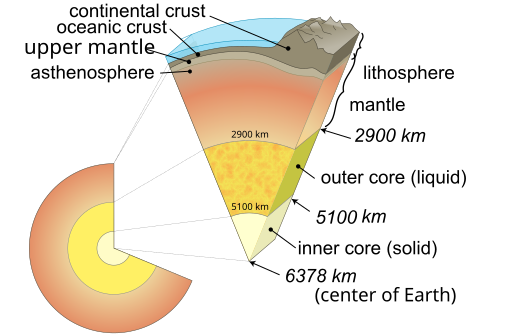

"The Blue Marble" - Earth seen by Apollo 17
Earth is a planet in the Solar System.
It is the third planet from the Sun and the biggest of the terrestrial planets.
It is the only place that is known to harbor life.
Earth has one natural satellite - Moon.
Earth contains liquid water on 71% of the surface and the remaining 29% is land.
The crust is made up of several tectonic plates that create the various features on Earth's surface - mountain ranges, volcanoes, trenches, and cause earthquakes.
The liquid outer core of the Earth is responsible for the magnetosphere, which protects from solar and cosmic radiation.
The athmosphere of Earth is made up of 78% nitrogen and 21% oxygen, with the remaining 1% consisting of other gases like argon and carbon dioxide.
Carbon dioxide and other greenhouse gases capture part of the energy from the Sun.
Those gases increase every year due to human activity, resulting in rising average temperatures.
Water vapors form clouds in the athmosphere as a part of the water cycle.
The 1950s marked the beginning of space exploration.
The first object to enter Earth orbit was Sputnik 1, which started the Space Race between the USSR and the USA.
Since then, the two superpowers were competing in the field of space technology for the purposes of national security and defense, but later went on to explore Earth and space for scientific reasons.
Today, many artificial satellites orbit Earth, including space stations like the International Space Station, a collaborative project between multiple countries.
Like other planets in the Solar System, the oldest Earth material dates back to 4.5 billion years.
It is believed that Earth was formed by a protoplanetary disc collapsing.
Million years after that, a protoplanet called Theia collided with Earth and formed the Moon in the process.
Earth's surface gradually cooled and a solid crust formed.
Ice was brought by comets and other object, which turned into oceans by the volcanic activity.
Between four and three and a half billion years ago the first life forms appeared.
Multiple theories exist on how life on Earth formed.
Spontaneous spawning is an ancient theory, first mentioned by Aristotle.
According to him, lower life forms formed from decaying organic matter.
In 1668 Francesco Redi conducted an experiment, in which meat was left rotting, to see if maggots appeared, but none did, disproving the theory.
Another ancient theory dates back to Anaxagoras in the 5th century BC - Panspermia.
It states that life exist throughout the universe and was brought to Earth by comets and asteroids.
This theory does not mention how life formed, only the method it was carried to Earth.
In 19th century several people proposed that life might have formed from inorganic compounds.
In 1924 Alexander Oparin and later in 1929 J. B. S. Haldane stated that the molecules constituting cells slowly self-organised from a so-called "primordial soup".
Chemists Stanley Miller and Harold Urey successfuly simulated such conditions in 1952.
Over the course of more than three billion years, life has evolved slowly, changing Earth's environment.
Photosynthesizing life enriched the atmosphere with oxygen and multicellular organisms appeared.
After the emergence of vertebrate organisms, fish quickly developed, and from them - the first amphibians evolved, which were the first to leave the oceans.
There were many mass extinction, the most recent occuring 66 million years ago, when a massive asteroid wiped out most non-avian life and especially dinosaurs.
Smaller mammals survived the impact and among those, apes gained abilities like upright standing and tool bearing.
They are members of the class Homo, which evolved into the modern-day humans.
Equinoxes, Solstices and Seasons
Orbit and rotation
The rotation period relative to the Sun is 24 h (solar day), but relative to other stars is 23 hours, 56 minutes and 4 seconds (stellar day).
It has been recorded that Earth's rotation is decelerating, although faster rotations were also reported.
Earth is the third closest planet to the Sun at an average distance of 150 million km.
This length is used as a basis for the Astronomical Unit, or AU.
Earth orbits around the Sun every 365.2564 solar days.
The axial tilt of Earth is approximately 23.44°.
Summer occurs after the Tropic of Cancer in the Northern Hemisphere or the Tropic of Capricorn in the Southern Hemisphere face the Sun.
Winter occurs at the same time at the opposite hemisphere.
These two positions of the Earth are calles solstices.
Equinoxes occur twice a year, when the Equator faces the Sun.
The axial tilt also creates two other circles - the Arctic and Antarctic circles.
Lands within each of them see the Sun one half of the year and experience a polar night the other half.
Earth reaches perihelion on 3 January and aphelion on 4 July.
Earth is a nearly spherical body with an average diameter of 12,742 km.
This makes Earth the fifth biggest planet in the Solar System.
Altitude on Earth is measured relatively to the sea level of 0 m.
Due to Earth's rotation, the lands around the Equator are farther from the cener than the poles.

Interior of the Earth
The crust is the outermost geologic layer of Earth, separated from the mantle by the Mohorovičić discontinuity.
It is divided into continental and oceanic depending on the surface.
While the continental crust contains more low-density igneous rocks like granite, oceanic crust has more basalt.
Both are covered by a layer of sedimentray rocks, which are accumulated and compressed sediments.
Igneous and sedimentary rocks can change into metamorphic rocks through high pressure or temperatures.
The mantle is a dense layer of mafic (iron and magnesium-rich) silicates in the interior of the Earth.
It is divided into upper, consisting mostly of olivine and pyroxene and lower mantle, consisting of magnesium perovskite.
Within the upper mantle is the asthenosphere, which is the mechanically weak layer below the lithosphere.
The innermost layer is the core of Earth.
It is split into a liquid outer core and a solid inner core.
The core consists of iron and nickel and is responsible for the magnetosphere around Earth.
Most of the water on Earth is in it's liquid phase.
About 71.8% of Earth's surface is covered by ocean.
The world ocean is divided into five smaller oceans - Pacific, Atlantic, Indian, Southern and Arctic ocean.
These oceans contain a continential shelf, mid-ocean ridges, mountains, volcanoes, trenches, canyons and plateaus.
The land takes up only 29.2% of the surface.
It consists of four main landmasses and many smaller islands.
The landmasses - Afroeurasia, America, Antarctica and Australia make up the continents that differ in number according to different definitions.
Most commonly there are seven continents - Afroeurasia is split into Asia, Africa, and Europe, while America is dividen in two - North and South America.
Just like the oceans, many landforms shape up the land surface - mountains, plateaus, plains, volcanoes and many more.
The tallest peak on Earth above the mean ocean level is Mount Everest within the Himalayas, Asia, at 8,848 m above sea level.
However, the tallest mountain from its base is Mauna Kea in Hawai'i - 9,930 m in total.
The lowest point is not well known due to the ocean's challenging exploration, but it is believed to be Challenger Deep within the Mariana Trench, around 10,936 m below sea level.

True color satellite map of Earth (oceans are filled with a single color)

Athmospheric layers of Earth
The athmosphere of Earth is mostly made up of 78% nitrogen and 21% oxygen.
The remaining 1% consisting of other gases like water vapors, argon, carbon dioxide, neon, helium, methane and krypton.
Carbon dioxide and other greenhouse gases like methane capture part of the energy from the Sun and warm the Earth.
Those gases increase every year due to human activity, resulting in rising average temperatures.
The atmosphere is divided into five parts.
The lowest 6-20 km are the troposphere.
It contains 3/4 of the total mass of the atmosphere.
This layer is where the air is flowing due to the rotational turbulence of Earth.
The stratosphere is the next layer, lying at 20-50 km.
Hotter air is concentrated at higher altitudes and colder at lower ones.
Commercial aircrafts fly at the lower end of the stratosphere to avoid turbulence in the troposphere.
The mesosphere is located between 50-85 km.
Temperatures decrease as altitudes increase.
This is where the lowest temperature in the atmosphere is.
The thermosphere reaches altitudes of 690 km.
As a part of the broader ionosphere, this layer is where air starts to get photoionised.
Temperatures can get significantly lower than 0°C or as high as 2,500°C.
The International Space Station orbits the Earth within the thermosphere.
The exosphere is the last layer, which gradually thins out into the Earth's magnetosphere.
The hydrosphere consists of all the water on Earth.
Most of it is in a liquid state and is a part of the world ocean, but also rivers and lakes.
Oceans and some lakes contain saline water, whereas rivers and other lakes are fresh water.
Ice water is concentrated at the poles and high altitudes, forming glaciers.
The abundant water changes states and moves, a process known as the water cycle.
Water can evaporate, going into the atmosphere and forming clouds.
Vapors condenses and precipitates usually in the form of rain, snow, or hail.
The water can get into rivers, lakes, oceans, or into groundwater reservoirs, completing the cycle.
Main article: Moon
The Moon is the only natural satellite orbiting Earth.
It is the fifth largest satellite in the Solar System and is the largest relative to it's parent planet.
The Moon has no magnetic field, a hydrosphere, or a significant athmosphere.
The lunar gravitational attraction causes tides on Earth.
It is also the only natural astronomic body other than Earth that has been visited by people during NASA's Apollo mission.
The Artemis mission is a follow-up to Apollo, with the uncrewed Artemis 1 already successful.
October 4 1957 marked the start of space exploration, when the Soviet Union launched Sputnik 1, the world’s first artificial satellite.
The metal sphere orbited Earth every 96 minutes, transmitting simple radio signals.
Sputnik’s success surprised the the United States, forcing them to accelerate their own space program and starting the Space Race between the USSR and the USA.
Sputnik 2 was the next step, this time carrying the first living being into orbit: a stray dog named Laika.
Though Laika did not survive the mission, her flight proved that a living organism could endure spaceflight.
The United States responded with its first satellite, Explorer 1, launched the next year and discovered the Van Allen radiation belt surrounding Earth.
As part of the second Korabl-Sputnik mission, two more dogs - Belka and Strelka, were the first to return alive from orbit in outer space.
In 1961, after three more missions with dogs on board, Soviet cosmonaut Yuri Gagarin became the first human in space and to orbit Earth aboard Vostok 1.
The spaceflight consisted of a single orbit after which Gagarin would descend with a parachute landing in Saratov Oblast, Russian SSR.
Five more Vostok spacecrafts were sent in orbit, each with one crewman.
In 1962, as part of Project Mercury, John Glenn becomes the first American to orbit Earth aboard Friendship 7, following Alan Sheppard's suborbital flight the previous year aboard Freedom 7.
USSR's Voskhod programme included two crewed missions, sending five people in total, with Alexei Leonov performing the first spacewalk during the Voskhod 2 mission.
Meanwhile, the American Gemini programme found success in performing space rendezvous (Gemini 6 and 7) and docking (Gemini 8), previously attempted during Vostok 3 and 4
The two powers were preparing to send people on the Moon.
The Soviet Union was again ahead with the Luna and Zond programmes.
Eventually, after an unfortunate setback and several gradual test missions, the USA succeeded and sent people on the moon with Apollo 11.
So far, USA has been the only country to send people there.
In 1971, the Soviet Union begins the first space station - Salyut 1.
The American response to the Salyut and later Almaz series was Skylab in 1973.
The space race reached a conclusion in 1975, when the two countries conducted a joint Apollo-Soyuz project where the two countries exchanged their own crew members in space.
ISS and space telescopes
In 1986, the Soviet Union launched the Mir programme to construct a modular space station.
The USA considered making their own modular space station, and the USSR was looking forward to a second Mir station.
After the fall of the Soviet Union and the end of the Cold War, however, the two sides (now Russia succeeding the USSR) announced that they will construct the International Space Station.
The ISS stands as the most prominent symbol of Earth orbit exploration and diplomacy.
Continuously inhabited since 2000, the ISS is a collaborative effort involving NASA, Roscosmos, ESA, JAXA, and CSA, among others.
It serves as a unique laboratory for studying the effects of long-duration spaceflight on the human body, testing new technologies, and conducting experiments in biology, physics, and materials science.
Beyond the ISS, Earth orbit is home to a diverse array of satellites and observatories.
Space telescopes like Hubble and James Webb have revolutionized our understanding of the Solar System and the universe.
Meanwhile, Earth observation satellites like Sentinel 1-6 monitor climate change, track natural disasters, and provide data essential for agriculture, urban planning, and environmental protection.
External links
{% include catplanets.html %}

{kind=link}